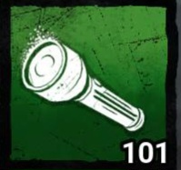
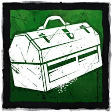

Generators
As a survivor your main objective is to do 5 of the 7 geneators. Generators take around 90 seconds to complete alone and is faster when you do it with other survivors
When doing a generator with more than one survivor each survivor gets a 15% speed penatly on the generator thats because doing gens with other survivors is slower than all other survivor spilting up and doing gens seperately.
What to do when completely generators
Hit all skill checks
You'll know when you get a skill check because a sound plays when you're on the gen. If you fail a skill check the generator will regress and lose progress
Don't 3 gen yourself and the team and watch if your teammates are about to 3 gen
a 3 gen is when theres 1 generator left needed to be completed by the 3 uncompleted gens are all in close proximity with each other
Stop regressing generators. Killers have the ability to kick generaotr and cause to regress slowly losing progress.
Status Effects
Survivors can receive status effects that are caused by either killers or survivor perks
Positive Status Effects
- Blessed
- Caused when survivors enter a boons range they receive the effects of that boon
- Haste
- Increases a survivors movement speed often caused by exhaustion perks
- Endurance
- Survivors with Endurance can survive an extra hit. They enter the deep wound state after being hit
- Broken
- Survivor cannot be healed beyond the injured state
- Deep Wound
- Survivors bleed out over time unless they mend themselves. If a survivor doesnt mend they enter the dying state
- Hemorrhage
- Survivor leaves extra blood pools and loses healing progress if not full healed
- Mangled
- Healing takes 25% longer
- Exposed
- If a survivor is exposed they can be downed into the dying state in one hit from a basic attack regardless of health state
- Cursed
- Survivors are cursed when the killer has a hex totem activated.
- Oblivious
- Survivors cannot hear the Killers Terror Radius, they dont receive the heartbear warning
- Incapacitated
- Survivors are unable to interact with certain items and other survivors
- Hindered
- Survivors movement speed is slowed
- Blindess
- Survivors cannot see auras
- Madness- caused by The Doctor
- Causes survivors to see hallucinations of The Doctor and pallets


Negative Status Effects


Healing and Unhooking
In Dead by Daylight survivors are going to be in 1 of 4 states
- Healthy
- Injured
- Deep Wound
- Dying
Healing other survivors is very important to keeping each other alive and winning the game
Cautions when healing
Make sure youre in a safe spot when healing and if you unhook a survivor unless the killer is chasing someone else it is unsafe to heal under hook
Items
As a survivor you get items through the Bloodweb
The most beginner friendly Items are the Med Kits and Maps
- Flashlights
- Flashlight (Uncommon) 
- Sports Flashlight (Rare)
- Utlility Flashlight (Purple) Very Rare
- Med Kits
- Camping Aid Kit(Uncommon)
- First Aid Kit(Uncommon)
- Emergency Med-Kit(Rare)
- Ranger Med-Kit(Very Rare)
- Toolboxes
- Worn-Out Tools (Common)
- Toolbox (Uncommon) 
- Mechanic's Toolbox (Rare)
- Commodious Toolbox (Rare)
- Enginner's Toolbox (Very Rare)
- Alex's Toolbox (Very Rare)
- Maps
- Cryptic Map (Common)
- Scribbled Map(Uncommon)
- Annotated Map (Rare)
- Keys
- Broken Key (Common)
- Dull Key (Uncommon)
- Skeleton Key (Rare)
- Fog Vials
- Apprentice's Fog Vial (Common)
- Artisans's Fog Vial (Uncommon)
- Vigo's Fog Vial (Rare)
You can use flashlights to blind (stun) the killer
To blind a killer aim your flashlight at their eyes. It is best to blind a killer when they are breaking a pallet or vaulting a window. Blinding is all about timing and might take time to learn. You'll know a killer is blinded when you hear the sound played. It takes about 3 seconds to blind a killer.
8 seconds of use

8 seconds of use
Decrease Flashlight battery consumption by 11%
Increase accuracy of the Flashlight beam by 20%

12 seconds of use
Increases the brightess of the Flashlight beam by 30%
Increases Blindness duration
Decreases the accuracy of the FLashlight beam by 20%
You can use Med Kits to heal other survivors faster than normal or use it to heal yourself at a slower rate
A full heal requires 16 charges

24 charges
Increases speed that you heal others by 35%
Unlock self-healing action
Decreases the speed and efficiency when healing yourself by 33%

24 charges
Increases speed that you heal others by 40%
Unlock self-healing action
Decreases the speed and efficiency when healing yourself by 33%

24 charges
Increases speed that you heal others by 45%
Unlock self-healing action
Decreases the speed and efficiency when healing yourself by 33%

24 charges
Increases speed that you heal others by 50%
Unlock self-healing action
Decreases the speed and efficiency when healing yourself by 33%
You can use Toolboxes to repair generators and sabotage hooks
Repairing a generator requires 90 charges
Sabotaging a hook requires 6 charges

16 charges
Increases repair speed by 50%
Decreases Skill check success zone size by 10%
Unlocks sabotage action
20 charges
Increases repair speed by 50%
Unlock sabotage action
Increases sabotage speed by 15%

16 charges
Increases repair speed by 75%
Unlocks sabotage action
Increases sabotage speed by 25%

32 charges
Increases repair speed by 50%
Unlocks the sabotage action
Increases sabotage speed by 50%

16 charges
Increases repair speed by 100%
Unlocks the sabotage action
Increases sabotage speed by 10%

18 charges
Increases repair speed by 10%
Unlocks the sabotage action
Increases sabotage speed by 100%
You can use Maps to reveal the auras of pallets and windows and theres a secondary ability to reveal generators

Press the Use Item Button to reveal the auras of all pallets and vaults with 24 meters for 10 seconds
using the secondary interaction creates a beam of light at the survivors location showing genrators within 32 meters highligheted with a red aura
6 charges

Press the Use Item Button to reveal the auras of all pallets and vaults with 32 meters for 12 seconds
using the secondary interaction creates a beam of light at the survivors location showing genrators within 32 meters highligheted with a red aura
6 charges

Press the Use Item Button to reveal the auras of all pallets and vaults with 40 meters for 40 seconds
using the secondary interaction creates a beam of light at the survivors location showing genrators within 32 meters highligheted with a red aura
6 charges
You can use Keys to open chest faster, reveal the aura of other survivors and unlock the hatch if it is closed by the killer

holding the use Item Button Reveals aura of Survivors withun 48 meters for 8 seconds
does not have the ability to open chest or hatch

holding the Use Item Button Reveals aura of Survivors within 56 meters for 9 seconds
Unlock Chest quickly
Unlock the Hatch

holding the Use Item Button reveals auras of Survivors withun 64 meters for 10 seconds
Unlock chests quickly
Unlock the Hatch
You can use Fog Vials to create a cloud of smoke to disrupt the killers vision and supress noises while hiding scratch marks

Releases a concentrated Fog
Fog Cloud last for 8 seconds
Fog Cloud expands a maximum of 8 meters
Has 2 charges. Recharges over 70 seconds

Releases a concentrated Fog
Fog Cloud last for 10 seconds
Fog Cloud expands a maximum of 8 meters
Has 2 charges. Recharges over 65 seconds

Releases a concentrated Fog
Fog Cloud last for 12 seconds
Fog Cloud expands a maximum of 8 meters
Has 2 charges. Recharges over 60 seconds
Add-Ons
Survivors get add-ons for items from the bloodweb. Add-ons can increase the charges an item has or make the item stronger
Notable add-ons for items include:
- Flashlight
- Odd Bulb
- High-End Saphhire Lens
- ALl batteries
- Med Kit
- Anti Exhaustion Syringe
- Gel Dressings
- Stypic Agent
- Surgical Suture
- Any healing speed or charge increase
- Toolbox
- Brand New Part
- Any repair or sabotage speed increase
- Map
- Sharpened Flint
- Any charge increase
- Keys
- Blood Amber
- Any charge increase
- Fog-Vials
- Mushroom Formula
- Oily Sap
- Reactive Compound
- Volcanic Stone
Looping and Holding Chase
Looping is an important part of survivor gameplay and survival. Knowing how to loop and hold chase is essential to your gameplay experience
The best way to learn how to play if by watching other survivors, youtbers and streamers and watching loop guides
If someone else is getting chased make sure you're helping others reset and doing generators